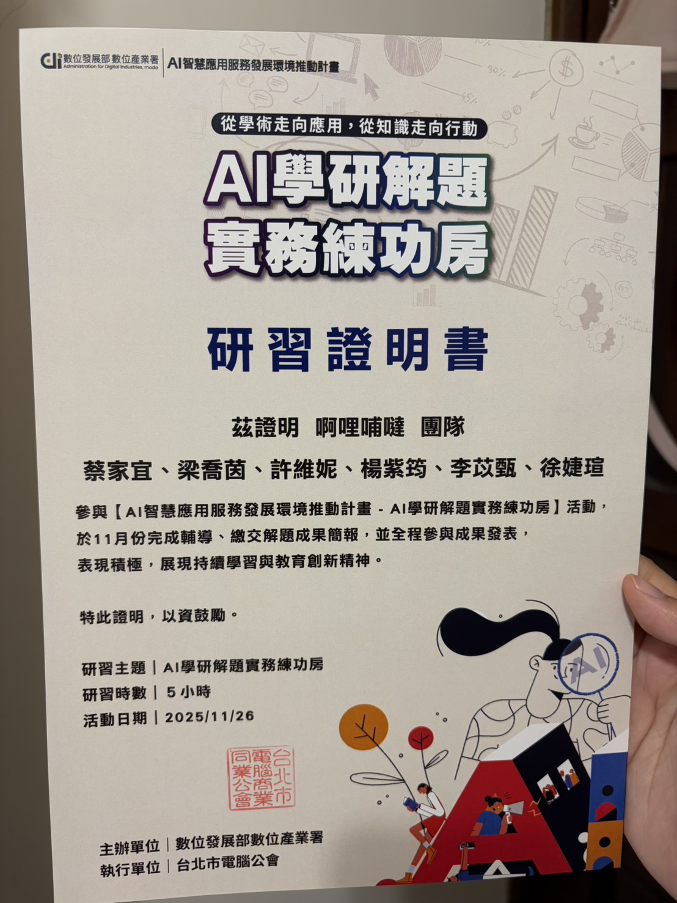

Profile
- 外語能力:全民英檢中級通過，多益705分，能以英文與外國供應商進行流暢溝通。
- 基本能力:HTML / CSS 基礎排版、Java 及Python程式設計入門、資料庫基本概念（SQL）、Excel 資料整理、表格製作與基本函數操作能力。
- 興趣:喜歡音樂，特別是聲樂，曾於合唱團累積多年經驗，從中不僅學習到了唱歌的技巧，也培養了團隊合作的能力，並透過舞台表演逐漸克服內向性格，提升自我表達能力;平時我也喜歡登山，透過過程培養面對困難的毅力與持續前進的態度。
- 個人特質:個性較為安靜，做事細心且有耐心，喜歡嘗試新事物。
- 未來目標:希望在採購領域深耕，結合數據分析與流程優化能力，提升供應鏈效率並支持企業策略決策，除此之外，學習第二外語(西班牙語)也將是我努力的方向。
Education
中原大學 | 資訊管理學系 (2023 - 2027)
Experience
糖尿病預測系統
透過機器學習模型分析健康數據（如血糖、BMI、年齡等），建立糖尿病風險預測系統，協助早期辨識潛在患者。
在本專案中，我不僅深入理解機器學習於醫療領域的實際應用，也學會資料前處理與模型建立流程，培養資料分析與問題解決能力，同時提升簡報與表達技巧。

AI智慧應用服務發展環境推動計畫-AI學研解題實務練功房
在學期間跟同學共同參與『GOBI 果比』智慧水果週配平台專案，運用了 AI 進行選品分析，並透過 n8n 實作 LINE 自動化推播行銷，同時設計了直觀的後台儀表板來監控訂單與財務狀況，成功整合技術與商業需求。